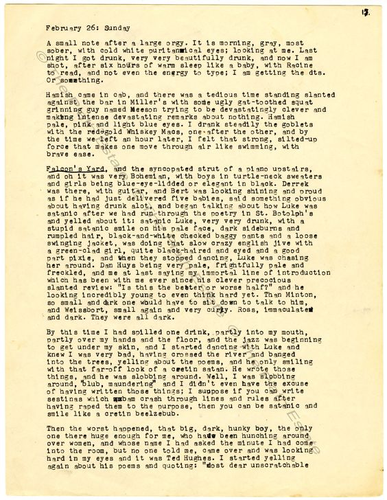
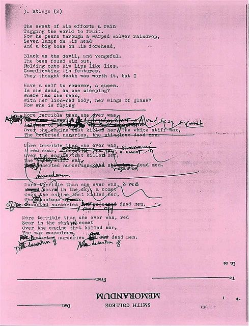
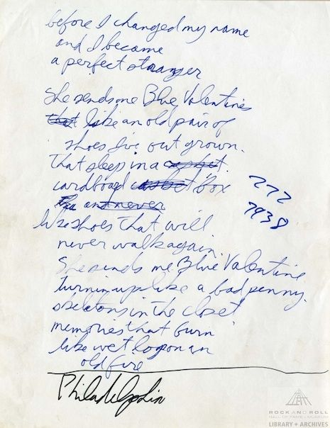
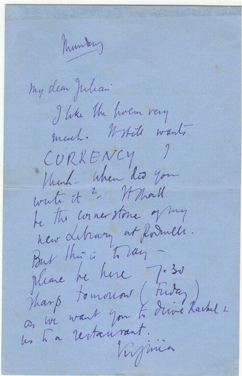
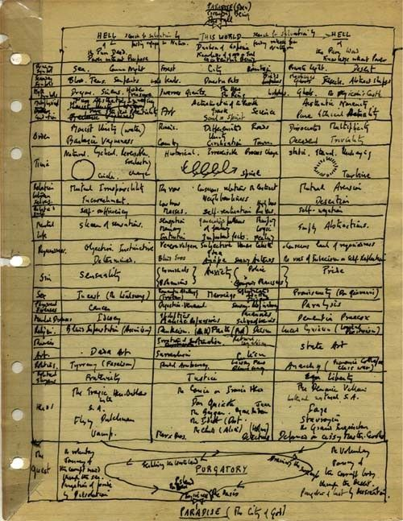
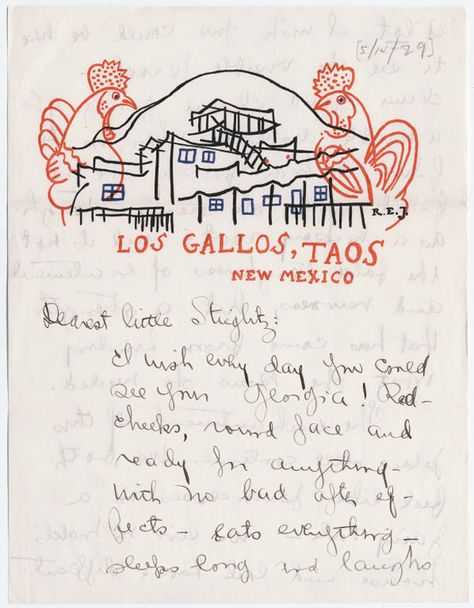
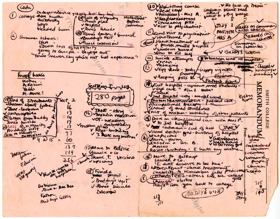
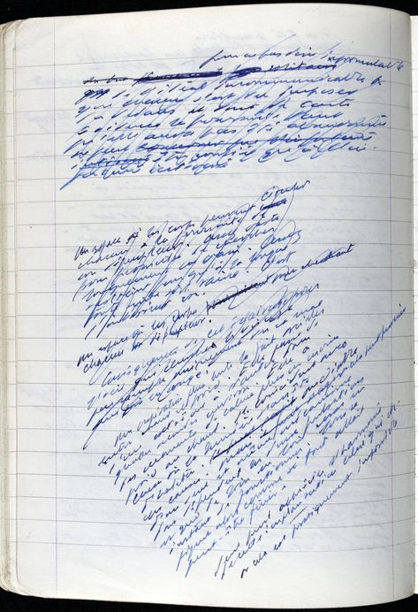

hippopotomonstrosesquipedaliophobia
you know. like 'antidisestablishmentarianism,' or 'thaleosyncraticneopticanic,' or 'supercalifragilisticexpialidocious:' but in more dictionaries. a common misspspelling is hippopotomonstrosesquippedaliophobia. two p's instead of one. pperhapps intentional. to make it even longer.
this is the kind of word the wise are hestitant to read. there comes a point in all of our lives when our vernacular grows large enough to discredit the effort of 'sounding out' complex words, as a child might do. we already know enough words, no?
and there is a great difference between
dic•tion•ar•y&hip•po•pot•o•mon•
stro•ses•quip•e•dal•
i•o•pho•bi•a.
hippopotomonstrosesquipedaliophobia is, of course, the fear of long words.
because what else would it be...
and reader, i will defend this. it's a rational fear. big words are frightening, disconcerting, disquieting, and spine-tingling. (we'll count the last one as one word, for our purposes.) and big passages are even scarier. part of my intention with the words you are reading right now, in fact, is to prevent readerly fatigue, because let's face it: the only words i've spared thus far in our journey are 'succinct' and 'brief.'
i covered a decent portion of this in previous sections: how the presentation of type influences engagement and interpretations and general attitudes towards bodies of text. but in doing so, i fear i've neglected to shine a light on the 'man behind the curtain' of printed matters: the fact that it is not a matter of print at all.
technophobia
(the fear of computers & wordprocessors)
hopefully this hasn't come as a shock to you, reader. but it has to be this way. if it were up to me, everything i ever created would be physical. i'd be scraping away at a tablet like enheduanna, or scrawling on the back of a letter like emily dickinson; telling and re-telling and re-re-telling stories hundreds of times over.
there's a tenderness in the act of writing: it's an exercise of the mind and hand; an extension of tradition: a direct connection to the enheduannas and emilys that came before us. my writing is homagistic.
my writing is the product of listening and listening in. my writing is a child's paper fortune teller, passed around the playground, matchmaking, confessing, and suggesting. my writing is brob-ding-na-gi-an. my writing is a little bit insufferable and stupid. my writing is an anxious habit conceived to replace cheek-biting and cuticle-picking and my writing is successful three-fourths of the time. my writing is always 'ands' and never 'ors.' my writing is decisive in that way, and frustratingly imprecise in others. my writing is a TI-83 graphing calculator with two lines of dead pixels. (the internet says it can't be fixed.) my writing is prone to loneliness and prefers to come in twos and threes. my writing craves attention and is unsatisfied with 'good enough. my writing needs to be told. my writing is easily frustrated and generally unkind. (it doesn't mean to be.) my writing is hard-boiled evidence of my humanity. my writing is sonic and rhythmic and pattern-driven. my writing is slow and nonsensical and redundant ten-times over. my writing is breathy and bluesy. my writing is a woman singing tenor two. my writing is more often than not about women and i've loved but never touched though sometimes it's about my father, or my first this or that or other. it's about stacks of paper and sturdy furniture and diner coffee mugs, and fresh holes in darned socks and cheap cotton and every song by 'life without buildings.' (off their live album, ten years after they broke up, where they talk in-between sets.) it's about plastic slip covers on expensive library books and subsequent paper-cuts from carrying them that you can’t quite call paper cuts because it wasn’t paper that cut you in the first place, but we’ll call them paper-cuts anyway because no one has come up with a better word for things like this, and in writing for this wordless thing, we find words for it, and exist despite the lack. as poets, we invent. we print and muddle and scan and re-re-format. we are needlessly wordy and ceaselessly worried and never ignorant in the ways we want to be. we talk in plurals when we talk about ourselves. i wrote about my second love recently and called her my first. who am i to talk about her at all, let alone in the third person. my second first love drove a blue 1967 ford mustang with two black stripes down the hood. she’d cut the hemlines and necklines of all her t-shirts and braid bracelets from the trimmings. she carried a lighter, but didn’t smoke. she wore two-day-old eyeliner and too much perfume, and she really liked yellow roses. i don’t think i knew i was in love with her until she introduced me to her boyfriend. we met in middle-class-public-high-school-studio-art-period-three, where we did very little painting but talked excessively about ‘the greats.’ she was a fan of van gogh, and made a point to pronounce his name as intended. she moved downstate after graduating: two hours out, give or take, on our suburban pseudo-highway. i rode in someone’s mom’s minivan. that someone was behind the wheel, with a second someone riding shotgun. both were close friends of hers, and friends-of-friends of mine, but they let me tag along to visit her all the same. they fought over the aux cord and forgot i was in the backseat. my antsy hums translated their song-choices onto the window, which was so thick with frost that any attempt to scrape it away would have been a waste of time. it was february. i had just turned fifteen. i will spare you the details of it all. they saw her, she hugged them, i saw her, she hugged me, she saw him, she kissed him, and i was glad i forgot the roses i’d bought for her at home. i leaned my temple against the still-frozen window all the way back; my head vibrating against it to the rhythm of four wheels over salted pavement. two hours, give or take. i called her on the fourteenth and apologized to her answering machine. "i really don’t like the word ‘love.’ it is imprecise. the world we inhabit is dictated by that which is known. it must know what is definitively ‘mine’ and ‘yours,’ or yours; what is right or wrong or on one side of the sand-line that divides one from zero or the other. love exists somewhere in between: perhaps the fractions of value between two numbers, or in the spaces between grains of sand, nearly touching, but not quite. love, as a noun, and/or a verb, cannot be succinctly captured, or known: when ‘knowing’ is ‘having direct cognition of,’ and ‘having practical experience in,’ or, in the time just after the beginning of the before, (archaic,) ‘having sexual intercourse with.’ in contrast to my instincts, ‘knowing’ is not a synonym for ‘loving,’ no matter the ‘having’ it involves. the thickest-spined thesaurus i could find lists 267 synonyms for ‘love,’ and ‘know’ is nowhere on that list. the list is an attempt at knowing. it is a written collection of attempts, made by us all, to get to something which is real, but exists behind words. or between them. in all the spaces between behind and between, these concepts, these unknowns of love for language, the dictionary, the thesaurus, the written word is all we have to describe the feeling. and of course, one cannot ‘feel,’ as in to sense, as in to touch, a word; and love is a word which is distinctly intangible in its written and spoken forms alike; unlike ‘air’ or ‘water,’ though many would argue it is equally as significant. it cannot be ‘is.’ of love, as in treasure. love as in thy neighbor. others, poems, and sonnets, and cheap greeting cards with the only addition being a signed name to address and another to signal the end, the ‘givers’ and ‘receivers’ of love, of pleasure, of love, as in to treasure. or love, as in darling. affection. love cannot be a sound, because language was developed for a reason, but language, the word, the greater word, as a concept, like the greater we, the greater you, exists in two forms: written and spoken. and the latter provides connotative meaning without context. and language is an agreement more than it is fact. any everything i am saying feels ugly on paper. like grass. it is sensory, which is what makes it powerful, which is what makes an insult hurt. which is what makes people hide. which is what makes me hide away from my identity. on paper, i am at the end of the day, when asked, i am ‘artist.’ i am a woman. a pink-triangle-wearing-pink-collar-working-black tied/eyed-hearted-faithless and hope-more/full-poet, all one word, with twelve hyphens, two forward slashes, and one pseudo-typo. i am ‘everything and nothing,’ every cliché-six-syllable-slant-rhyme and near-kiss-missed and turned cheek to lips to fist; rejecting love at every opportunity i am able, raising my right hand high and at attention at my forehead and using less commas and more ‘ands’ than should be acceptable on paper; then semicolon continuing on with another, then, then then, again, stalling, knowing, feeling, and loving. language is sensational, in every sense of the word. and my writing is borrowed more often than it is conceived.








it's a lot.
and it's why printed matters is, ultimately, anything but it's namesake.
text on the web is a lot different than text in life. it is ultimately a matter of 'taking things away.'
simply, the web lacks materiality.